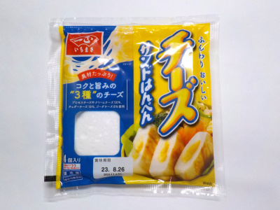
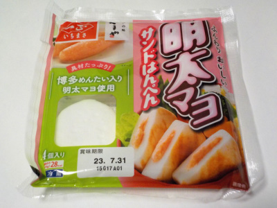

一正のチーズサンドはんぺん。
2023/08/18

やわらかいハンペンによく合った、とろりとしていて濃い味付けのチーズが入っていました。
独特な感じで、これはこれでアリかなと思いました。
新潟県新潟市東区津島屋七丁目77番地
2023/08/18

やわらかいハンペンによく合った、とろりとしていて濃い味付けのチーズが入っていました。
独特な感じで、これはこれでアリかなと思いました。
2023/07/27

ふわふわのはんぺんにクリーミーな感じの明太マヨが入ってて美味しいです。
お弁当に丁度いいので、最近食べてないなーと思ったら買っています。